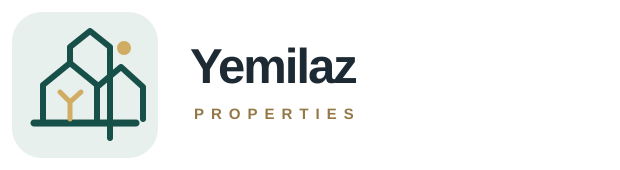

01 · Estate monogram
A roofline and Y mark for a clear, premium property identity.
Download SVGScalable vector concepts in deep jade, warm ivory and brass. Each can be refined into your final brand mark.
A roofline and Y mark for a clear, premium property identity.
Download SVGAn architectural seal with a welcoming doorway and Y.
Download SVGA compact, contemporary mark designed for app icons and signage.
Download SVG
A small skyline and horizon that suggests a growing portfolio.
Download SVGA warm, simple entrance motif for a welcoming homes brand.
Download SVGAll concepts are transparent-background SVG files and can be enlarged without losing quality.